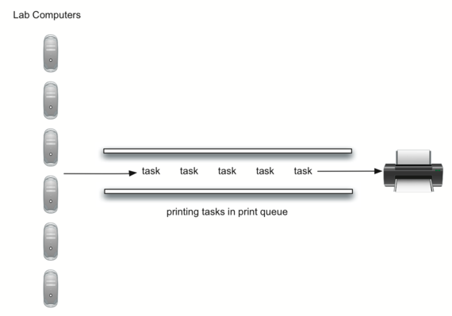

Section 1.14 Queue Simulation: Printing Tasks
A more interesting simulation allows us to study the behavior of the printing queue described earlier in this section. Recall that as students send printing tasks to the shared printer, the tasks are placed in a queue to be processed in a first come, first served manner. Many questions arise with this configuration. The most important of these might be whether the printer is capable of handling a certain amount of work. If it cannot, students will be waiting too long for printing and may miss their next class.
Consider the following situation in a computer science laboratory. On any average day about 10 students are working in the lab at any given hour. These students typically print up to twice during that time, and the length of these tasks ranges from 1 to 20 pages. The printer in the lab is older, capable of processing 10 pages per minute of draft quality. The printer could be switched to give better quality, but then it would produce only five pages per minute. The slower printing speed could make students wait too long. What page rate should be used?
We could decide by building a simulation that models the laboratory. We will need to construct representations for students, printing tasks, and the printer (Figure 1.14.1). As students submit printing tasks, we will add them to a waiting list, a queue of print tasks attached to the printer. When the printer completes a task, it will look at the queue to see if there are any remaining tasks to process. Of interest for us is the average amount of time students will wait for their papers to be printed. This is equal to the average amount of time a task waits in the queue.

To model this situation we need to use some probabilities. For example, students may print a paper from 1 to 20 pages in length. If each length from 1 to 20 is equally likely, the actual length for a print task can be simulated by using a random number between 1 and 20 inclusive. This means that there is equal chance of any length from 1 to 20 appearing.
If there are 10 students in the lab and each prints twice, then there are 20 print tasks per hour on average. What is the chance that at any given second, a print task is going to be created? The way to answer this is to consider the ratio of tasks to time. Twenty tasks per hour means that on average there will be one task every 180 seconds:
\(\frac {20\ tasks}{1\ hour} \times \frac {1\ hour} {60\ minutes} \times \frac {1\ minute} {60\ seconds}=\frac {1\ task} {180\ seconds}\)
For every second we can simulate the chance that a print task occurs by generating a random number between 1 and 180 inclusive. If the number is 180, we say a task has been created. Note that it is possible that many tasks could be created in a row or we may wait quite a while for a task to appear. That is the nature of simulation. You want to simulate the real situation as closely as possible given that you know general parameters.
Subsection 1.14.1 Main Simulation Steps
Here is the main simulation.
-
Create a queue of print tasks. Each task will be given a timestamp upon its arrival. The queue is empty to start.
-
For each second (
current_second):-
Does a new print task get created? If so, add it to the queue with the
current_secondas the timestamp. -
If the printer is not busy and if a task is waiting,
-
Remove the next task from the print queue and assign it to the printer.
-
Subtract the timestamp from the
current_secondto compute the waiting time for that task. -
Append the waiting time for that task to a list for later processing.
-
Based on the number of pages in the print task, figure out how much time will be required.
-
-
The printer now does one second of printing if necessary. It also subtracts one second from the time required for that task.
-
If the task has been completed, in other words the time required has reached zero, the printer is no longer busy.
-
-
After the simulation is complete, compute the average waiting time from the list of waiting times generated.
Subsection 1.14.2 Python Implementation
To design this simulation we will create classes for the three real-world objects described above:
Printer, Task, and PrintQueue.
The
Printer class (Listing 1.14.2) will need to track whether it has a current task. If it does, then it is busy (lines 13–17) and the amount of time needed can be computed from the number of pages in the task. The constructor will also allow the pages-per-minute setting to be initialized. The tick method decrements the internal timer and sets the printer to idle (line 11) if the task is completed.
class Printer:
def __init__(self, ppm):
self.page_rate = ppm
self.current_task = None
self.time_remaining = 0
def tick(self):
if self.current_task is not None:
self.time_remaining = self.time_remaining - 1
if self.time_remaining <= 0:
self.current_task = None
def busy(self):
return self.current_task is not None
def start_next(self, new_task):
self.current_task = new_task
self.time_remaining = new_task.get_pages() * 60 / self.page_rate
The
Task class (Listing 1.14.3) will represent a single printing task. When the task is created, a random number generator will provide a length from 1 to 20 pages. We have chosen to use the randrange function from the random module.
>>> import random
>>> random.randrange(1,21)
18
>>> random.randrange(1,21)
8
>>>
Each task will also need to keep a timestamp to be used for computing waiting time. This timestamp will represent the time that the task was created and placed in the printer queue. The
wait_time method can then be used to retrieve the amount of time spent in the queue before printing begins.
import random
class Task:
def __init__(self, time):
self.timestamp = time
self.pages = random.randrange(1, 21)
def get_stamp(self):
return self.timestamp
def get_pages(self):
return self.pages
def wait_time(self, current_time):
return current_time - self.timestamp
The main simulation (Listing 1.14.4) implements the algorithm described above. The
print_queue object is an instance of our existing queue ADT. A boolean helper function, new_print_task, decides whether a new printing task has been created. We have again chosen to use the randrange function from the random module to return a random integer between 1 and 180. Print tasks arrive once every 180 seconds. By arbitrarily choosing 180 from the range of random integers (line 31), we can simulate this random event. The simulation function allows us to set the total time and the pages per minute for the printer.
import random
from pythonds3.basic.queue Queue
def simulation(num_seconds, pages_per_minute):
lab_printer = Printer(pages_per_minute)
print_queue = Queue()
waiting_times = []
for current_second in range(num_seconds):
if new_print_task():
task = Task(current_second)
print_queue.enqueue(task)
if (not lab_printer.busy()) and (not print_queue.is_empty()):
nexttask = print_queue.dequeue()
waiting_times.append(nexttask.wait_time(current_second))
lab_printer.start_next(nexttask)
lab_printer.tick()
average_wait = sum(waiting_times) / len(waiting_times)
print(
f"Average Wait {average_wait:6.2f} secs" \
+ f"{print_queue.size():3d} tasks remaining."
)
def new_print_task():
num = random.randrange(1, 181)
return num == 180
for i in range(10):
simulation(3600, 5)
When we run the simulation, we should not be concerned that the results are different each time. This is due to the probabilistic nature of the random numbers. We are interested in the trends that may be occurring as the parameters to the simulation are adjusted. Here are some results.
First, we will run the simulation for a period of 60 minutes (3,600 seconds) using a page rate of five pages per minute. In addition, we will run 10 independent trials. Remember that because the simulation works with random numbers each run will return different results.
>>> for i in range(10):
... simulation(3600, 5)
...
Average Wait 165.38 secs 2 tasks remaining.
Average Wait 95.07 secs 1 tasks remaining.
Average Wait 65.05 secs 2 tasks remaining.
Average Wait 99.74 secs 1 tasks remaining.
Average Wait 17.27 secs 0 tasks remaining.
Average Wait 239.61 secs 5 tasks remaining.
Average Wait 75.11 secs 1 tasks remaining.
Average Wait 48.33 secs 0 tasks remaining.
Average Wait 39.31 secs 3 tasks remaining.
Average Wait 376.05 secs 1 tasks remaining.
>>>
After running our 10 trials we can see that the mean average wait time is (165.38 + 95.07 + 65.05 + 99.74 + 17.27 + 239.61 + 75.11 + 48.33 + 39.31 + 376.05) / 10 = 122.09 seconds. You can also see that there is a large variation in the average wait time with a minimum average of 17.27 seconds and a maximum of 376.05 seconds. You may also notice that in only two of the cases were all the tasks completed.
Now we will adjust the page rate to 10 pages per minute and run the 10 trials again. With a faster page rate, our hope would be that more tasks would be completed in the one-hour time frame.
>>> for i in range(10):
... simulation(3600, 10)
...
Average Wait 1.29 secs 0 tasks remaining.
Average Wait 7.00 secs 0 tasks remaining.
Average Wait 28.96 secs 1 tasks remaining.
Average Wait 13.55 secs 0 tasks remaining.
Average Wait 12.67 secs 0 tasks remaining.
Average Wait 6.46 secs 0 tasks remaining.
Average Wait 22.33 secs 0 tasks remaining.
Average Wait 12.39 secs 0 tasks remaining.
Average Wait 7.27 secs 0 tasks remaining.
Average Wait 18.17 secs 0 tasks remaining.
>>>
You can run the simulation for yourself in ActiveCode 2.
Subsection 1.14.3 Discussion
We were trying to answer a question about whether the current printer could handle the task load if it were set to print with a better quality but slower page rate. The approach we took was to write a simulation that modeled the printing tasks as random events of various lengths and arrival times.
The output above shows that with 5 pages per minute printing, the average waiting time varied from a low of 17 seconds to a high of 376 seconds (about 6 minutes). With a faster printing rate, the low value was 1 second with a high of only 28. In addition, in 8 out of 10 runs at 5 pages per minute there were print tasks still waiting in the queue at the end of the hour.
Therefore, we are perhaps persuaded that slowing the printer down to get better quality may not be a good idea. Students cannot afford to wait that long for their papers, especially when they need to be getting on to their next class. A six-minute wait would simply be too long.
This type of simulation analysis allows us to answer many questions, commonly known as what-if questions. All we need to do is vary the parameters used by the simulation and we can simulate any number of interesting behaviors. For example,
-
What if enrollment goes up and the average number of students increases by 20?
-
What if it is Saturday and students do not need to get to class? Can they afford to wait?
-
What if the size of the average print task decreases since Python is such a powerful language and programs tend to be much shorter?
These questions could all be answered by modifying the above simulation. However, it is important to remember that the simulation is only as good as the assumptions that are used to build it. Real data about the number of print tasks per hour and the number of students per hour was necessary to construct a robust simulation.
Exercises Self Check
How would you modify the printer simulation to reflect a larger number of students? Suppose that the number of students was doubled. You make need to make some reasonable assumptions about how this simulation was put together but what would you change? Modify the code. Also suppose that the length of the average print task was cut in half. Change the code to reflect that change. Finally How would you parametertize the number of students, rather than changing the code we would like to make the number of students a parameter of the simulation.